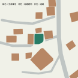

1 樓配置

四套家具風格均已更新；原版建築同步更新名稱及衛浴。請選取家具風格查看配置。
依使用者最新指示優先於 PDF 舊用途；建築尺寸保留。鄰房避讓調整仍屬近似位置，不是測量成果。
| 項次 | 位置 | 修正 |
|---|---|---|
| 1 | 北側鄰房 | 含屋簷量體移至基地外；與住宅投影重疊面積為 0。 |
| 2 | 道路與鄰房 | 移除舊示意路面；道路、巷道與鄰房／寺廟投影重疊面積為 0。 |
| 3 | 1F 西側 | 改為展覽空間／教室：展示台、畫作、四張教學桌與座椅；移除住宅沙發組。 |
| 4 | 1F 東側 | 改為 Lobby：接待櫃台、候客座位及茶几。 |
| 5 | 2F 臥室一 | 床頭及枕頭改朝廁所 B 方向，床頭近相鄰隔牆。 |
| 6 | 2F 廁所 B | 靠門原坐式便器改為壁掛小便斗，原有其他設備保留。 |
| 7 | 2F 客廳 | 改為客廳兼餐廳：保留起居座位並加入四人餐桌。 |
| 8 | 2F 原餐廳 | 改為廚房：L 形工作檯、水槽、爐具、抽油煙機、吊櫃與冰箱。 |
| 9 | 3F 臥室一 | 床頭及枕頭改朝臥室二方向。 |
| 10 | 3F 原臥室三 | 改為佛廳／祭祀空間：供奉檯、供桌、香爐與拜墊；移除床。神像另待使用者選定。 |
| 11 | 4F 原臥室 | 改為儲藏間：兩側層架及收納箱；移除床與書桌，入口保留。 |
以下為波西米亞版的實際模型截圖；其餘三套採相同用途與家具位置。


北側鄰房／住宅、道路／建物投影重疊均為零。床头方向以匯出模型頂點檢查；四套風格各有五張床。另檢查模型格式、樓層與屋頂切換及手機觸控模擬；實體安卓驗收尚未進行。
幾何檢查結果及鄰房移位紀錄 · 下載檢查清單 · 實景來源與限制
